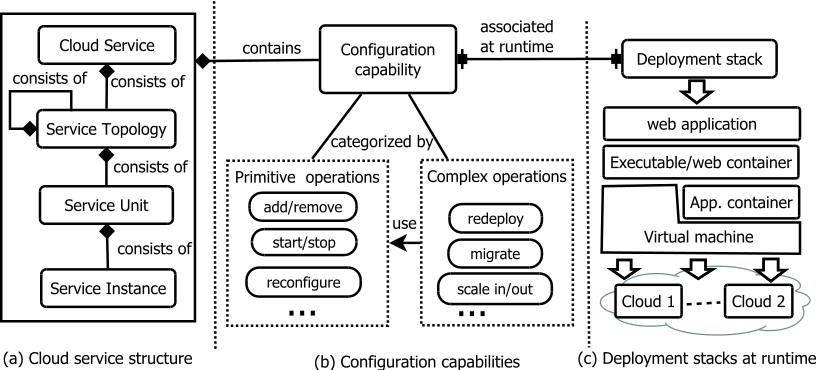
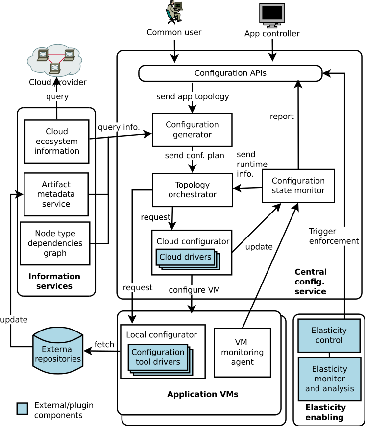

In order to manage at multiple configuration dimentions including multiple stacks, abstraction levels, phases and clouds, SALSA use below model to capture the information and to manage the configuration capabilities. Please find the detail UML here.

Model to managing IoT Cloud System.
SALSA framework follows the master/agents model. The components communicate via a message queue. The main components are:
- Salsa-engine: the central component which provides high level orchestration of configuration and management APIs.
- Pioneer: these agents run on infrastructure or docker platform to execute the configurations.
- Collector: these agents interact with external services to collect more capabilities to configure the systems.
- Commandline client and Java DSL: the tools for sysadmin and developer to interact with SALSA.

Deployment architecture of SALSA.
c
Note: Click onto the components of the figure to navigate to the source code.